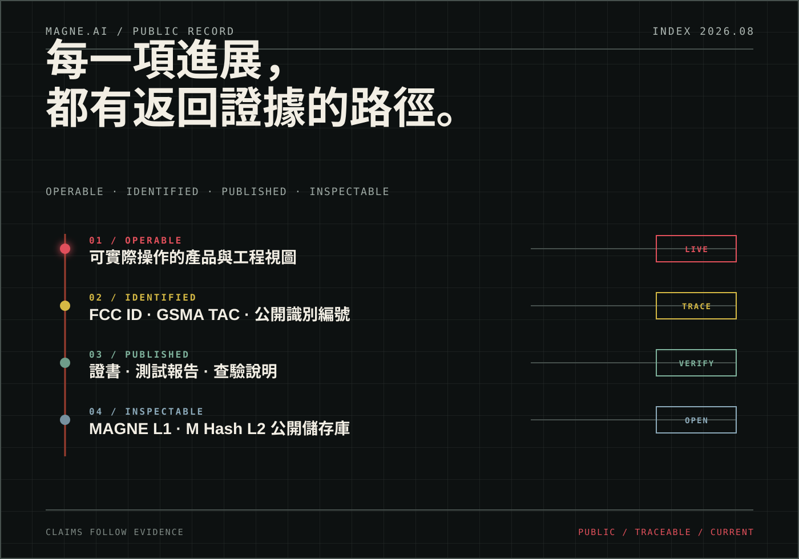

技術開發與前期工程證據已具備；文件受 NDA 約束，僅可在權限控制下查閱。
項目進展 · PUBLIC RECORD
進度不是一條進度條。是留下證據。
我們只把已公開、可查驗或可實際操作的內容列為進展。尚未確認的量產、出貨與地區資訊，不用一句「即將」替代。

公開證據 · PUBLISHED EVIDENCE
不是徽章。
是可以走完的查驗路徑。
每一項狀態都連回證書、公開編號、測試報告或說明文件。讀者不必先相信 MAGNE.AI，才能開始核對。
ANDROIDGoogle GMS 與 Widevine L1查看參考資料 →
UNITED STATESFCC ID 2BVCPGC603606查看公開文件 →
GLOBAL MOBILEGSMA TAC 01681300查看設備身份 →
BATTERY SAFETYCB 證書與 IEC 62133 測試查看證書 →
TRANSPORTUN38.3 與運輸資料查看出貨文件 →
CALIFORNIAProposition 65 報告查看披露文件 →
EUROPECE EU-Type Examination查看型式證書 →
狀態邊界：本頁所列「已公開」表示已有網站頁面或底層文件可供審閱；不將組件認證擴大解讀為整機取得相同安全等級，也不替代監管機構或原始證書的正式記錄。
可實際檢視 · INSPECTABLE OUTPUT
產品不只存在於文字裡。
時光軸 · PUBLIC CHRONOLOGY
時間不替承諾作證。
完成的事，才會。
顯示全部 28 個節點
- COMPANY追加 US$2.64M 策略融資累計公開融資達 US$12.64M，資金將支持工程驗證、商業交付及 AI Agent 支付基礎設施。
- COMPANYGAEA Ventures · WebX Tokyo 2026 系列邊會MAGNE.AI 參與東京 WebX 期間的 GAEA Ventures 系列活動。
- WEB3Phone Gen1 Lottery Season 1 成功收官首季社區激勵活動完成公開週期，共有 76,650 個獨立鏈上地址參與，並錄得真實 USDT 鏈上交互，驗證 MAGNE.AI 社區的參與度與鏈上活躍度。
- DEVICEPVT P2 階段驗收通過階段結果可公開；支持文件受 NDA 約束，可於受控盡職調查中查閱。
- COMPLIANCEMAG1 CE 認證公開EU-Type Examination 證書識別資訊與適用範圍進入公開查驗路徑。
- COMPLIANCEMAG1 FCC 認證公開以 FCC ID 2BVCPGC603606 索引無線、EMC、SAR 與 HAC 公開資料。
- WEB3Phone Gen1 Lottery Season 1 上線社區激勵活動與 Season 1 儀表板正式對外開放。
- COMPLIANCEMAG1 California Proposition 65 通過產品化學物質測試報告進入公開披露。
- NETWORKBeosin Pre-deployment Audit 公開部署前智能合約安全審計完成，公開報告可直接查閱。
- NETWORKBeosin Business-contract Audit 公開Business Contract 智能合約安全審計完成，公開報告可直接查閱。
- WEB3GS Legal · $MHA Legal Opinion 出具新加坡法律意見書已出具；原件受 NDA 約束，合資格審閱方可申請受控下載。
- DEVICEEVT 試產完成 · P1 階段驗收通過階段結果可公開；支持文件受 NDA 約束，可於受控盡職調查中查閱。
- COMPANYUniversity Engagement Tour · PhiladelphiaMAGNE.AI 參與 Real-World Assets 費城站交流活動。
- DEVICEEVT 試產執行啟動階段節點可公開；支持記錄受 NDA 約束，不披露交易資料或商業條款。
- DEVICEPRE EVT P0 階段驗收通過階段結果可公開；支持文件受 NDA 約束，可於受控盡職調查中查閱。
- COMPLIANCEMAG1 CB 認證通過IEC 62133-2 電池安全證書與測試報告可供查驗。
- COMPLIANCEMAG1 GSMA TAC 頒發TAC 01681300 成為全球行動設備身份索引。
- COMPLIANCEMAG1 UN38.3 認證通過鋰電池運輸測試、MSDS 與出貨資料形成完整審閱路徑。
- COMPLIANCEMAG1 Google GMS 完成認證Android、Google Mobile Services 與 Widevine L1 相關資料進入審閱。
- NETWORKMAGNE L1 測試網瀏覽器上線L1 從代碼進入可連接、可觀察的公開測試環境。
- NETWORKM Hash L2 測試網瀏覽器上線基於 OP Stack 的 L2 測試活動具備公開查詢入口。
- DEVICEPRE EVT 技術開發階段啟動階段節點可公開；支持文件受 NDA 約束，可於受控盡職調查中查閱。
- DEVICE試產製造合作啟動階段節點可公開；支持文件受 NDA 約束，可於受控盡職調查中查閱。
- DEVICE製造供應鏈準入流程啟動階段節點可公開；支持文件受 NDA 約束，可於受控盡職調查中查閱。
- WEB3MAGNE L1 與 M Hash L2 代碼開源兩層網絡的公開儲存庫開始接受外部檢視。
- COMPANYUS$10M 策略融資首輪策略資本為硬件、網絡與市場交付爭取下一段驗證時間。
- COMPANYNew York · Intelligent Assets: AI Meets the RWAMAGNE.AI 在紐約主辦 AI 與實體資產主題邊會。
- COMPANYMAGNE.AI Launch Night · MYBW 2025產品首次在公開現場完整呈現硬件、AI 與所有權命題。
編年順序以 RootData MAGNEAI 項目頁與公司公開紀錄為參考；認證狀態、適用範圍及技術條件仍以原始證書、測試報告與監管記錄為準。
受控證據 · NDA EVIDENCE
有些證據存在。
但不適合公開下載。
試產製造與驗證證據已具備，不提供公開下載；可申請受控盡職調查。
階段與驗收結果可公開；支持文件受 NDA 約束，不披露文件內容、主體或條款。
保密資料不進入網站資產、構建產物或公開儲存庫；對外只標示 NDA 可查。